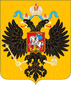
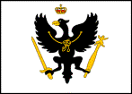

{kind=link}
Dating back to 1441, when the Danish King Christian I was proclaimed the King of Norway, "union" between the two countries existed, with Denmark ruling over the less-populous and more agrarian Norway. Neutrality and a consequent improvement in the nation’s foreign trade marked Frederick V’s reign (1746-66). In the Great Northern War (1709-20), Denmark had failed to recapture territories lost to her rival, Sweden, in the preceding century. Ever since then, Denmark-Norway had eschewed the wars of Europe. By the 18th Century, Denmark-Norway had acquired an important merchant marine and navy. To enjoy freedom of the seas, preserving the state’s neutrality became a great concern of its leaders. In 1762, this neutrality was threatened when Denmark-Norway became embroiled in a territorial dispute with Russia over the Duchy of Holstein. Thanks to the efforts of an outstanding statesman, Count von Bernstorff (who had earlier preserved Denmark-Norway’s neutrality in the Seven Years War), a carefully drafted treaty was negotiated and Russia renounced its claims to the duchy. War was again averted by the Danes.
|
Among nations, the Danish flag is considered to be the oldest
continuously used flag in the world.
The modern national flag was defined in 1748. |
Starts with fleets in Copenhagen and Christiania. Unit color is purple.
5) The Hapsburg Empire (Austria) (4 Supply Centers)
Maria Theresa (reigned 1740-80), Holy Roman Empress, Archduchess of Austria, and Queen of Hungary, was a key figure in the power politics of 18th century Europe. To the Hapsburg Empire – a dynastic agglomeration of disparate lands – she gave a measure of unity and was one of the most capable rulers of her House. Indeed, her dynamic and resourceful leadership saved the Hapsburg Monarchy from total dissolution in the War of the Austrian Succession. For the remainder of her reign, Maria Theresa strove to ensure that Austria would never again be so humbled. Guided by the minister, Count von Kaunitz, Maria Theresa streamlined the Imperial structure and drew together to the extent possible, the multiethnic and polyglot regions of the far-flung Hapsburg Empire. “This woman’s achievements,” stated her lifelong enemy, Frederick the Great, “were those of a great man.” By 1763, a great rivalry for the leadership of Germany arose as two great Houses – the upstart Hohenzollern monarchy of Prussia and the caretakers of the ancient Holy Roman Empire, the Hapsburgs of Austria – vied for hegemony, in a condition of tension known as “the German Dualism.”
|
The flag of the “Black-Yellow Monarchy” bears the colors of the ancient
Holy Roman Empire; the throne of which an Austrian Hapsburg had sat since the
Middle Ages. Though technically
an arch-duchy, Austria soon became synonymous with the empire. |
Starts with armies in Vienna, Budapest, Milan, and Austrian Netherlands. Unit color is red.
See V. Special Rules regarding building in the Austrian Netherlands.
6) Kingdom of Great Britain/ Electorate of Hanover (4 Supply Centers)
Britain and France fought the Seven Years War for dominion over colonies. Britain was a formidable economic power and had served as the “war chest of Europe” by hiring mercenary armies, bankrolling allies, and providing subsidies to foreign garrisons all across Europe. Hanover, a small German state, was the British ruling dynasty’s continental possession. Hanoverian armies fought several battles against the French during the Seven Years War. Britain arose from the war as the leading colonial and naval power, but this success aroused resentment throughout Europe that Britain was developing a monopoly on overseas trade. Britain found itself increasingly politically isolated. This was also a period of internal turmoil. In 1760, the “mad” King George III (of Great Britain and Prince-Elector of Hanover) succeeded to the throne and would become one of the most controversial monarchs in British history. The 1760’s were also a period of bad harvests, rising food prices, high taxes, and sporadic unemployment. Such instability undoubtedly hampered efforts to resolve the problem of its own American colonies.
|
In 1707, the separate kingdoms of England and Scotland agreed to
permanent union as the “Kingdom of Great Britain.” The merger of their respective national flags produced the
“Union Flag,” which appears here. |
Starts with fleets in London, Edinburgh, and Gibraltar, and an army in Hanover. Unit color is dark blue. (Note: Gibraltar is not a SC, although a fleet starts there. Liverpool is a SC for Great Britain, though no unit begins the game there.)
7) The Kingdom of France (3 Supply Centers).
Though sorely defeated in the Seven Years War, pre-Revolutionary France – the Ancien Régime – was wealthy, populous, and still a force to be reckoned with. Unfortunately for France, it was under the long rule of Louis XV (reigned 1715-74). One of Louis’ faults was to take more counsel from his mistress, Madame de Pompadour (or "the Prime Minister in petticoats," as she was derisively called by those who deplored her influence), than the ambassadors and advisors of his court. Although France had the richest resources of any country in Europe, the central government was chronically poor because it could not effectively tap the sources of wealth within its kingdom. Louis' ineptitude in affairs of state would cost France defeat in the Seven Years War and almost all her possessions in India and North America. His ineffectual reign earned him the contempt of his subjects and a tremendous loss in France’s prestige. While France was still clearly one of the Great Powers of Europe, its influence was at a very low ebb in 1763.
|
The concept of a “flag” in its modern sense did not exist in most
countries in 1763. However, the most common “flag” of the Ancien Regime was
probably white background with gold fleur-de-lis. |
{kind=link}
Starts with armies in Paris and Marseilles, and a fleet in Brest. Unit color is light blue.
8) The Russian Empire (3 Supply Centers)
In the Seven Years War, Russian armies were successful in conquering East Prussia and occupying Berlin briefly (the empress Elizabeth’s death during the Seven Years War saved the King of Prussia from disaster). Her replacement, Peter III, ruled for a mere six months. The first of his monumental mistakes was to make peace with Russia's "bitterest enemy," but Peter's own hero, Frederick the Great. In 1762, he was deposed in a bloodless revolt and Catherine was placed in his stead. Expansion of Imperial Russia’s might continued under Catherine the Great (reigned 1762-96), who led her country into full participation in the political and cultural life of Europe, carrying on the work begun by Peter the Great. With her ministers, she reorganized the administration and law of the Russian Empire and with her armies, began to expand Russian territory. Under Catherine’s rule Russia was becoming strong enough to threaten the other great powers, and because she was in fact a harsh and unscrupulous ruler, she figured in the Western imagination as the incarnation of the immense, backward, and forbidding country she ruled.
|
 |
In absolute monarchies like France and Russia, the notion that the flag
represented anything other than the sovereign, was an idea that was only
beginning to take root. The
“flag” of Russia at this time would have been the Imperial Coat of Arms,
pictured here, on a white or yellow background.. |
Starts with armies in Moscow and Kiev, and a fleet in St. Petersburg. Unit color is white.
See V. Special Rules regarding Crimea becoming a home SC for Russia.
9) The Kingdom of Prussia (3 Supply Centers)
The autocrat Frederick I left his son and successor, Frederick II, a wealthy financial reserve, productive domains, a hardworking bureaucracy, and arguably, the best-trained army in Europe. Frederick II, known now as the Great (reigned 1740-86), put the newly realized strength of the Prussian state at the service of an ambitious but risky foreign policy. Frederick astonished Europe within months of his accession to the throne by invading Silesia, a prosperous and flourishing province of the Habsburg Empire, thus precipitating the War of the Austrian Succession. The Austro-Prussian struggle for Silesia continued, with uneasy intermissions, until the end of the Seven Years War. Facing seemingly insurmountable odds in the Seven Years War, Frederick brilliantly outmaneuvered and outfought the coalition bent on Prussia's destruction that had been assembled by the Habsburg Empire as revenge for the War of Austrian Succession. The final acquisition of Silesia increased the territory and population of tiny Prussia by a third. The wars of Frederick the Great not only established his personal reputation as a military genius, but also won recognition for Prussia as one of the Great Powers of Europe.
|
 |
The Prussian flag in 1763 was an ongoing revision of a
flag dating back to 1525, when Prussia was merely a Polish fiefdom. In 1701 the Duchy of Prussia became a
Kingdom with the permission of Poland and the Holy Roman Emperor. |
Starts with armies in Berlin, Breslau, and Koenigsberg. Unit color is black.
10) The Ottoman Empire (Turkey) (3 Supply Centers)
Not involved in the Seven Years War, but impossible to ignore as a power in Europe, the Ottoman Empire was under the rule of Sultan Mustafa III (reigned 1757-74). Mustafa instituted governmental and military reforms (including the adoption of western-style tactics, uniforms, and arms) to halt the empire’s slow but steady decline. A century and a half earlier the Ottoman Turks had ruled over the largest empire in the world, but that day of glory was now fast fading. Dominated by military and religious factions, the Empire remained a medieval state politically, economically, and socially. In spite of urgings by France and Prussia, the Ottoman Empire was reluctant to participate in the European scheme of alliances and counter-alliances. As a consequence, it fought constant, intermittent wars with its European neighbors in the 18th century. Although no longer at the peak of its power (the last siege of Vienna occurred in 1683), it still took a coalition of European nations to humble the Ottoman Empire in the 18th century.
|
The crescent and star had long been used by the Turks, even before the advent of Islam. While the empire didn’t have a “national” flag to speak of in 1763, this design, featuring a seven pointed star, was probably the most common and served as the basis for the modern Turkish flag. |
Starts with armies in Sofia and Damascus, and a fleet in Constantinople. Unit color is yellow.
III. MINOR POWERS
In addition to the ten Great Powers, there is also a host of “minor powers,” which are non-player neutral Supply Centers (SCs) representing the smaller states of Europe and North Africa. These include (space names in bold) the following:
§ The Regency of Algiers (an autonomous province of the Ottoman Empire)
§ Baden-Wuerttemberg (representing the various small states of southwestern Germany, including the Margravates of Baden and the Duchy of Wurttemberg )
§ The Electorate of Bavaria
§ The Duchy of Courland (an autonomous fiefdom of Poland-Lithuania)
§ Hesse-Westphalia (representing the various small states of northwestern and central Germany, including the Earldoms of Hesse and the Duchy of Westphalia)
§ The Khanate of Crimea (a vassal state of the Ottoman Empire)
§ Mecklenburg (representing the Duchies of Mecklenburg)
§ The Sultanate of Morocco
§ The Papal States
§ The Kingdom of Portugal
§ The Kingdom of Sardinia (see VIII. Notes on Map)
§ The Swiss Confederation (Switzerland)
§ The Regency of Tunis (an autonomous province of the Ottoman Empire)
§ Tuscany (representing the Grand Duchy of Tuscany and Duchies of Modena and Reggio)
§ Two Sicilies (representing the Kingdom of Naples and Kingdom of Sicily)
§ The United Provinces
§ The Venetian Republic
Each minor power, although a “non-player,” starts with a unit (unit color is dark green). All minor powers start with an army except for the following minors that start with a fleet: Courland, Portugal, the Venetian Republic, Two Sicilies, the United Provinces, Morocco, Tunis, and Algiers (the fleets in Morocco, Tunis, and Algiers representing the Barbary Corsairs).
Minor power units prevent a Great Power from simply moving into an empty space and gaining control of the SC. To occupy a minor power SC, a Great Power will need to move in with support. A minor power unit that is forced to retreat is disbanded. If a Great Power does not occupy the minor power SC at the end of a Fall turn, the minor power’s unit is automatically rebuilt in the Winter.
As in standard Diplomacy, a Great Power controls a minor power SC when one of its units occupies the space after a Fall turn has been played and completed. Once a Great Power gains control of a minor power SC, it can leave the SC vacant and still keep control of it as long as that SC is not occupied by another Great Power at the close of a Fall turn.
Minor power units do nothing but hold in place, unless the unit has been ordered by a Great Power using its Diplomacy Points.
IV. DIPLOMACY POINTS
At the start of the Spring and Fall turns, each Great Power
receives one Diplomacy Point (DP) for each SC it controls, up to a maximum of
three DPs per turn. During each
Spring and Fall turn, each Great Power may allocate none, some, or all of its
DPs to minor powers that still have units on the map. For each DP allocated, the allocating Great Power submits an
order for that particular minor power’s unit. A Great Power may also consolidate all of its DPs (if it has
more than one) into a single order.
A Great Power may only order a minor power to hold or support. A minor power may not be ordered to
move or attack.
Unused DPs may not be carried over into the next turn. They are simply lost.
Players are not required to tell each other how they
allocated their DPs. Just as with
negotiations, players may honor their agreements with other players or not, as
they see fit. Only the GM will
know how Great Powers have allocated their DPs. DP allocation is not published in the adjudication; only
the end results are published.
The GM determines how DPs have been allocated. In the event of a conflict, an order for a particular minor power’s unit is followed if it is supported by more DPs than any conflicting order. See the following examples:
Example 1. In Spring ‘63, France allocates one DP to Switzerland to get it to support a French attack on Savoy. No other major Power allocates a DP to Switzerland so the Swiss unit supports the French attack on Savoy.
Example 2. In Spring ‘63, France allocates one DP to Switzerland to get it to support a French attack on Savoy. Austria also allocates one DP to Switzerland to get it to support an Austrian attack on the Venetian Republic. Since France and Austria each allocated one DP to Switzerland, neither controls Switzerland and the Swiss army simply holds in place.
Example 3. In Spring ‘63, France allocates two DPs to Switzerland to get it to support a French attack on Savoy. Austria allocates only one DP to Switzerland to get it to support an Austrian attack on the Venetian Republic. Since France allocated one more DP to Switzerland than Austria did, the Swiss support the French attack on Savoy.
Example 4. In Spring ‘63, France allocates one DP to Switzerland to get it to support a French attack on Savoy. Austria allocates one DP to Switzerland to get it to support an Austrian attack on the Venetian Republic. In support of France, the Ottoman Empire allocates one DP to Switzerland to get it to support the French attack on Savoy. Although France, Austria, and the Ottoman Empire each allocated one DP to Switzerland, the French get the Swiss support because the Turks supported the French diplomatic efforts with the Swiss.
If, during a Spring or Fall turn, a Great Power allocates more DPs to minor powers than it is entitled to, all of that Great Power’s DPs are forfeited for that particular turn.
V. SPECIAL RULES
1) Miscellaneous
- The first turn of the game begins in the Spring of 1763.
- While the Austrian Netherlands is a home SC for Austria, Austria may not build in the Austrian Netherlands. Austria may build in Milan however.
- Britain may build in Hanover.
- Crimea serves as a home SC for Russia if it is controlled by Russia.
2) Additional Home Supply Center (SC)
- The 2 SC Great Powers (Poland & Saxony, Spain, Sweden, Denmark-Norway) may acquire a third home SC during the game. This center is the first SC the Great Power captures and is final for the remainder of the game. The Great Power may not acquire additional or subsequent home SCs during the game.
Example 1. Portugal is the first SC captured by Spain. Portugal is now considered, along with Madrid and Barcelona, one of Spain’s home SCs. This means Spain may build units in Portugal. Spain later captures Morocco. While Morocco counts as one of Spain’s SCs it is not a home SC. Later, Great Britain captures Portugal from Spain. The status of Morocco does not change, i.e., it does not become Spain’s “new” third home SC. Spain will not have a third home SC in the game unless it recaptures Portugal.
- The third home SC may be either a minor power or the SC of another Great Power. However, if the SC was originally another Great Power’s SC, its status does not change. In other words, the SC functions as the home SC for whichever Great Power controls it during the game. The recapture of a lost home SC, even if it is the “first” SC captured by the Great Power, does not preclude the Great Power from later acquiring a third home SC during the game.
Example 2. Stockholm is the first SC captured by Denmark-Norway. Even though Stockholm was one of Sweden’s original home SCs, it is now Denmark-Norway’s third home SC. Later in the game, Sweden recaptures Stockholm. Stockholm now reverts back to the status of one of Sweden’s home SCs. The following year, Sweden captures Mecklenburg. Mecklenburg now becomes Sweden’s third home SC. For the rest of the game, Denmark-Norway’s third home SC is Stockholm and Sweden’s third home SC is Mecklenburg.
3) Restriction on Diplomacy Point Allocation
The following rules restrict certain allocations of DPs to minor powers, in recognition of religious division in Europe and the Mediterranean world in 1763. In short, any Great Power may allocate DPs to any minor power in the game. However:
· the Papal States may only be ordered to hold or support a unit belonging to a Catholic state (i.e., Austria, France, Poland & Saxony, Spain, Tuscany, Two Sicilies, and The Venetian Republic).
· a Muslim minor power (i.e., Algiers, Crimea, Morocco, and Tunis) may not be ordered to support an attack by a Christian Great Power against a space that is occupied by a Muslim unit (i.e., a unit of the Ottoman Empire or any of the Muslim minor powers).
· a Christian minor power may not be ordered to support an attack by the Ottoman Empire against a space that is occupied by a Christian unit (a unit of any Great Power or minor power not listed as a “Muslim unit” above).
VI. VICTORY CONDITIONS
As soon as one Great Power controls 15 SCs, the game ends immediately and the player representing that Great Power is the winner.
If two Great Powers each gain control of 15 or more SCs at the same time, the player representing the Great Power with the most SCs is considered the winner. If the two Great Powers each control the same number of SCs, the game continues until one player has 15 or more SCs and that player has more SCs than any other player.
Players may terminate the game by mutual agreement before a winner is determined. If this occurs, any decision reached by the players (e.g., concede game to one player, concede game to an alliance) must be accepted unanimously. If the players cannot agree, all players who still have pieces on the board when the game ends share equally in a draw.
VII. CIVIL
DISORDER
If a player is lost during the game, the GM is encouraged to find a replacement player for the affected Great Power rather than have it lapse into civil disorder. In the event no replacement player is found and the GM declares the Great Power to be in permanent civil disorder, the following rules apply:
· All units of the Great Power in civil disorder (GPCD) are immediately disbanded.
· All SCs controlled by the GPCD that are unoccupied are immediately considered newly independent minor powers. Minor power army units are built in those minor power spaces.
· All SCs controlled by the GPCD that are occupied by a unit belonging to another Great Power are unaffected. If the occupying Great Power moves its unit out of the GPCD’s SC so that the SC is unoccupied at the conclusion of a Fall turn, a minor power army unit is built there and that SC is considered a newly independent minor power.
· For the remainder of the game, all newly independent minor powers are subject to the provisions of III. Minor Powers. In particular, this means the new minor power can be influenced using Diplomacy Points (see IV. Diplomacy Points).
· Once a Great Power is declared to be in permanent civil disorder, it may not be played by an active player again.
VIII. NOTES ON MAP
·
There is no canal where Kiel is located in standard Diplomacy.
· Lake Ladoga, the Russian body of water adjoining the spaces of St. Petersburg, Novgorod Territory, Karelia, and Moscow, is impassable. A unit may not move from St. Petersburg to Novgorod Territory or vice versa. Similarly, a unit may not move from Karelia to Moscow or vice versa.
· The Sea of Azov, an integral part of the Crimea space, is considered impassable for fleet movement purposes. Only one unit, a fleet or an army, may occupy Crimea at any one time. Further, this means that Kazan has only one coast. This is the coast along the Black Sea. The tiny coast off of the Sea of Azov is ignored for fleet movement purposes.
· Gibraltar is a sea space that does not contain land. Gibraltar does not break the coast of Andalusia or Morocco in two.
· Army movement across water is permitted without a convoy at one crossing point on the map: Ireland-Edinburgh.
· The Island of Sicily is considered to be an integral part of the “Two Sicilies” space and is not a separate space of its own.
· The Islands of Iceland and Sardinia are passable and may be occupied.
· The Kingdom of Sardinia, a minor power, is represented by two spaces on the map: Savoy, a SC, and the Island of Sardinia.
· Courland does not touch Koenigsberg. While the Lithuania space separates Courland from Koenigsberg, Lithuania does not have a “coast” on the Baltic Sea and is considered impassable for fleet movement purposes. Thus, a fleet may not occupy Lithuania.
IX. SPACE NAMES AND ABBREVIATIONS.
Being based on a map of Europe in 1763, Ambition & Empire has a number of spaces that do not appear on the conventional Diplomacy map. As in Diplomacy, there are twenty sea spaces. However, with few exceptions, the land spaces are radically changed, particularly in the east. There are seventy-four land spaces, of which forty-three are SCs. All spaces on the Ambition & Empire map, along with their abbreviations, are listed below. SCs are annotated with an asterisk (*).
Abo* Abo
Adriatic Sea Adr
Aegean Sea Aeg
Algiers* Alg
Andalusia And
Aragon Ara
Armenia Arm
Austrian Netherlands* ANe
Baden-Wuerttemberg* BaW
Baltic Sea Bal
Barcelona* Brc
Barents Sea BaS
Bavaria* Bav
Black Sea Bla
Berlin* Ber
Bohemia Boh
Bosnia Bos
Breslau* Brl
Brest* Bre
Budapest* Bud
Burgundy Bur
Christiania* Chr
Constantinople* Con
Copenhagen* Cop
Courland* Cou
Crimea* Cri
Croatia Cro
Damascus* Dam
Dresden* Dre
Eastern Mediterranean Eas
Edinburgh* Edi
English Channel Eng
Galicia Gal
Gascony Gas
Gibraltar Gib
Gulf of Bothnia Gbo
Gulf of Lyon GLy
Hanover* Han
Helgoland Bight Hel
Hesse-Westphalia* HeW
Holstein Hol
Iceland Ice
Ionian Sea Ion
Ireland Ire
Irish Sea Iri
Karelia Kar
Kazan Kaz
Kiev* Kev
Koenigsberg* Kon
Languedoc Lan
Lapland Lap
Leon Leo
Lithuania Lit
Liverpool Lvp
London* Lon
Lusatia Lus
Madrid* Mad
Marseilles* Mar
Mecklenburg* Mec
Mid-Atlantic Ocean Mid
Milan* Mil
Morocco* Mor
Moscow* Mos
North Atlantic Ocean Nat
North Sea Nth
Norwegian Sea NwS
Novgorod Territory Nov
Papal States* Pap
Paris* Par
Picardy Pic
Portugal* Por
Posen Pos
St. Petersburg* StP
Sardinia Sar
Savoy* Sav
Scania Sca
Skaggerak Ska
Sofia* Sof
Stockholm* Sto
Switzerland* Swi
Tunis* Tun
Tuscany* Tus
Two Sicilies TwS
Tyrol Tyr
Tyrrhenian Sea TyS
United Provinces* Upr
Venetian Republic* Ven
Vienna* Vie
Wales Wal
Wallachia Wla
Warsaw* War
Western Mediterranean Wes
Yorkshire Yor
Zaporozh’ye Zap
X. GAME MAP

XI. BACKGROUND
A recurring question we’ve received about Ambition and Empire is, how did we settle on the date, 1763? Why create a variant that starts at the end of Seven Years War, instead of right before it? Part of the reasoning was that we didn’t want to create a variant that simply allowed players to reshape the events of the Seven Years War. We were looking at doing a period of history that hadn’t been fleshed out. We would be surprised if this didn’t figure on some level into Calhammer’s decision to select 1901 as the starting point for Diplomacy, rather than 1914.
However, we also believed that the states-system and balance created by the Seven Years War was far more conducive to a multi-player variant, than existed at the outset of the war. For starters, while a number of events and political forces factored into the struggle, at its heart, the Seven Years War was a fight between superpowers of the day, France and England, for global dominance. At the conclusion of the Seven Years War however, this power structure was simply no longer in place.
Until the outbreak of the First World War, international relations in Europe would be dominated by five great powers: England, France, Austria, Russia, and Prussia. In his book, The Emergence of the Eastern Powers, 1756-1775, author H. M. Scott traces the origins of the Great Power system to the events of the third quarter of the 18th Century; most notably, the military emergence of Russia and Prussia in the Seven Years War and, along with Austria, a shift in the center of power in Europe, eastwards.
For play-balance, we added five other states to the mix. The first of these had to be the Ottoman Empire (Turkey). While not yet the “sick man of Europe,” it was certainly ailing. We also added four other “former great” powers of Europe; countries who reached their zenith in the 16th and 17th centuries and who were now gracefully (or not so gracefully, in the case of Poland), settling into second-tier status in 1763: Sweden, Spain, Denmark-Norway, and Poland & Saxony. The inclusion of Saxony with Poland reflects the fact that the Prince-Elector of Saxony was also King of Poland. Politically, Saxony was the leading German state after Prussia and Austria (although certainly not in their league).
Of these players, the most ado has been made about our inclusion of Denmark-Norway and Poland & Saxony. Denmark-Norway was, admittedly, little more than a great commercial and shipping power in 1763, although it had a sizeable merchant navy; one of the largest in Europe in fact. Similarly, but for its political ties with Saxony and sheer size, Poland – which was on the brink of anarchy in 1763 and would soon be partitioned out of existence by Prussia, Austria, and Russia – is another “stretch.” Still, we like the inclusion of these states for play-balance and because we wanted a larger multi-player variant.
This October 2005 version of Ambition and Empire represents the most significant, single revision of the variant, since we began play-testing it in 2000. Much of it represents valued, thoughtful comments and suggestions we have received from a number of dedicated players over the course of the years. We are genuinely grateful for their input and enthusiasm for the game.